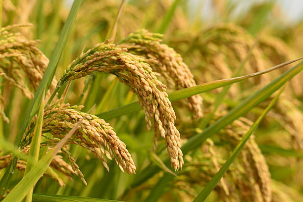

Choose the Right Crop for the Right Season
Growing crops that are suited to the current season increases your chances of a successful harvest. Our guide will help you determine which crops are most appropriate for your climate and time of year.
Special Focus: Paddy (Rice) Cultivation

Rice Growing Seasons
- Kharif (Monsoon) Season: June to November - Main rice growing season
- Rabi Season: November to May - Second rice crop in regions with adequate irrigation
- Summer Season: March to June - Limited regions with good irrigation facilities
Ideal Conditions for Rice
- Temperature: 20°C to 35°C
- Rainfall: 100-200 cm annually
- Soil: Clay or clay loam soils that retain water
- pH: 5.5-6.5 (slightly acidic)